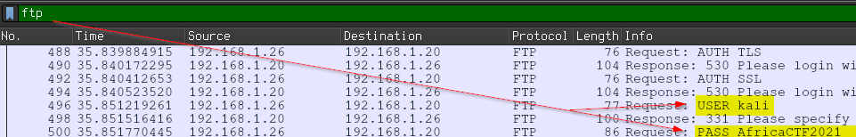
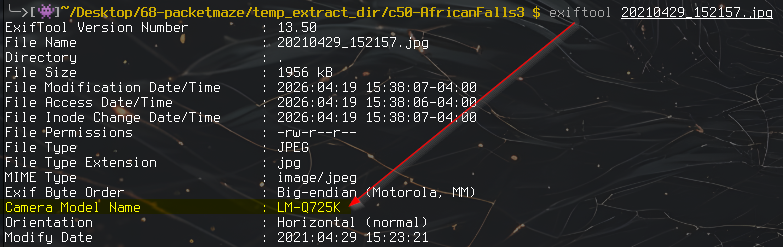
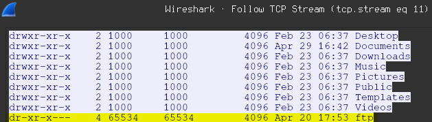
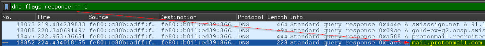
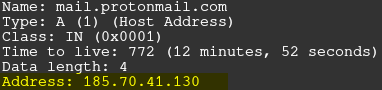
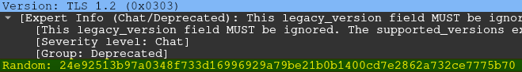
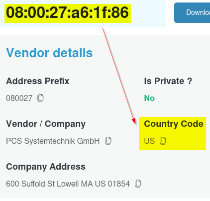

A company's internal server has been flagged for unusual network activity, with multiple outbound connections to an unknown external IP. Initial analysis suggests possible data exfiltration. Investigate the provided network logs to determine the source and method of compromise. The PCAP file (UNODC-GPC-001-003-JohnDoe-NetworkCapture-2021-04-29.pcapng) covers the subject's network activity across multiple protocols: FTP, DNS, TLS, and UDP.
The investigation requires correlating artifacts across all of these: file transfers, encrypted communications, DNS lookups and image metadata which allows us to build a complete picture of the subject's behaviour and intent.
| Tactic | Technique ID | Technique | Evidence Observed |
|---|---|---|---|
| Initial Access | T1078 | Valid Accounts | Subject authenticated to external FTP server using plaintext credentials (AfricaCTF2021), legitimate user abusing access for unauthorised data transfer |
| Collection | T1005 | Data from Local System | Photo file 20210429_152157.jpg transferred to external FTP server. EXIF metadata confirmed camera model LM-Q725K (LG Q7+), establishing device attribution |
| Exfiltration | T1048.003 | Exfil over Unencrypted Protocol | File uploaded via FTP (STOR command) in plaintext to external server, credentials and file content fully visible in PCAP |
| Defense Evasion | T1071.001 | Web Protocols (Encrypted) | Subject connected to ProtonMail via TLS 1.3, use of end-to-end encrypted email to avoid content monitoring |
| Defense Evasion | T1564 | Hide artifacts | Non-standard /ftp directory created on FTP server April 20 at 17:53, pre-planned staging infrastructure created 9 days before the monitored session |
| Pre-attack Research | T1592 | Gather Victim Host Info | DNS lookup for www.7-zip.org (packet 15174) reveals subject researching compression tools, consistent with data staging preparation |
Statistics → Protocol Hierarchy gave an immediate overview of protocols present: FTP, FTP-DATA, DNS, TLS, HTTP (a mix of plaintext and encrypted activity suggesting multiple investigative angles).

Statistics → Conversations → IPv6 revealed the DNS server's IPv6 address: fe80::c80b:adff:feaa:1db7. This required pivoting from the subject's IPv4 address to its MAC, then matching that MAC in the IPv6 tab: a multi-step correlation testing understanding of Layer 2 and Layer 3 addressing.
frame.number == 15174) revealed a DNS query for www.7-zip.org. In the context of an insider investigation, a subject researching compression tools is behaviourally significant and consistent with data staging.
20210429_152157.jpg identified a STOR command in frame 7070: the subject uploading a photo to an external FTP server.

The FTP directory listing (TCP streams 11→12) showed a non-standard/ftp directory created April 20 at 17:53 nine days prior, indicating pre-planned staging infrastructure.

mail.protonmail.com and its IP address 185.70.41.130


Two TLS questions required locating specific sessions: one by session ID, one by destination domain. For the session ID,tls was used to search for da4a0000342e4b73..., returning frame 26906 and the reassembled PDU in frame 26913 contained the full TLS handshake and server certificate public key under Server Key Exchange.
tls.handshake.type == 1 && tls.handshake.extensions_server_name=="protonmail.com" the first Client Hello — at 2021-04-30 01:04:29 UTC — contained the TLS 1.3 client random: 24e92513b97a0348f733d16996929a79be21b0b1400cd7e2862a732ce7775b70. ProtonMail is end-to-end encrypted.

